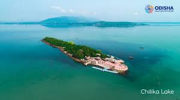

Top 7 Tourist Places in Odisha
Puri Jagannath Temple


The Puri Jagannath Temple is one of the Char Dham pilgrimage sites for Hindus. Located in Puri,
it is dedicated to Lord Jagannath and attracts millions of devotees, especially during the famous
Rath Yatra. Known for its grand architecture and spiritual significance, it is an iconic landmark
in Odisha.
Clcik Here for more details
Puri Beach


Puri Beach, with its golden sands and clear waters, is a serene retreat. It is famous for religious significance,
especially during the Rath Yatra, and offers a perfect blend of spirituality and relaxation. Visitors can enjoy
beach festivals and water activities.
Clcik Here for more details
Konark Sun Temple

The Konark Sun Temple, a UNESCO World Heritage site, is renowned for its magnificent chariot-shaped structure.
Built in the 13th century, it is dedicated to the Sun God and showcases remarkable Kalinga architecture.
The temple’s intricacy and grandeur make it an architectural marvel.
Clcik Here for more details
Koraput


Nestled in the lush green hills of southern Odisha, Koraput is known for its picturesque landscapes,
waterfalls, and tribal culture. The area is famous for Duduma Falls, the serene atmosphere, and its
natural beauty, making it a tranquil destination for nature lovers.
Clcik Here for more details
Bhubaneswar


Bhubaneswar, the capital of Odisha, is known for its ancient temples, earning the title "Temple City of
India." With its rich heritage, Bhubaneswar is a blend of traditional architecture and modern urban
development, featuring prominent temples like Lingaraj Temple and Mukteshwar Temple.
Clcik Here for more details
Chilika Lake


Chilika Lake, the largest coastal lagoon in India, is a haven for migratory birds. Situated near Puri,
it is a perfect spot for birdwatching, boating, and fishing.
The lake's ecosystem supports a diverse range of wildlife and is a UNESCO Ramsar Wetland site.
Clcik Here for more details
Simlipal National Park


Simlipal National Park is one of India's largest tiger reserves, located in the Mayurbhanj district.
Known for its rich biodiversity, including Bengal tigers, elephants, and leopards, it is a haven for
wildlife enthusiasts and nature lovers, with dense forests and beautiful waterfalls
Clcik Here for more details